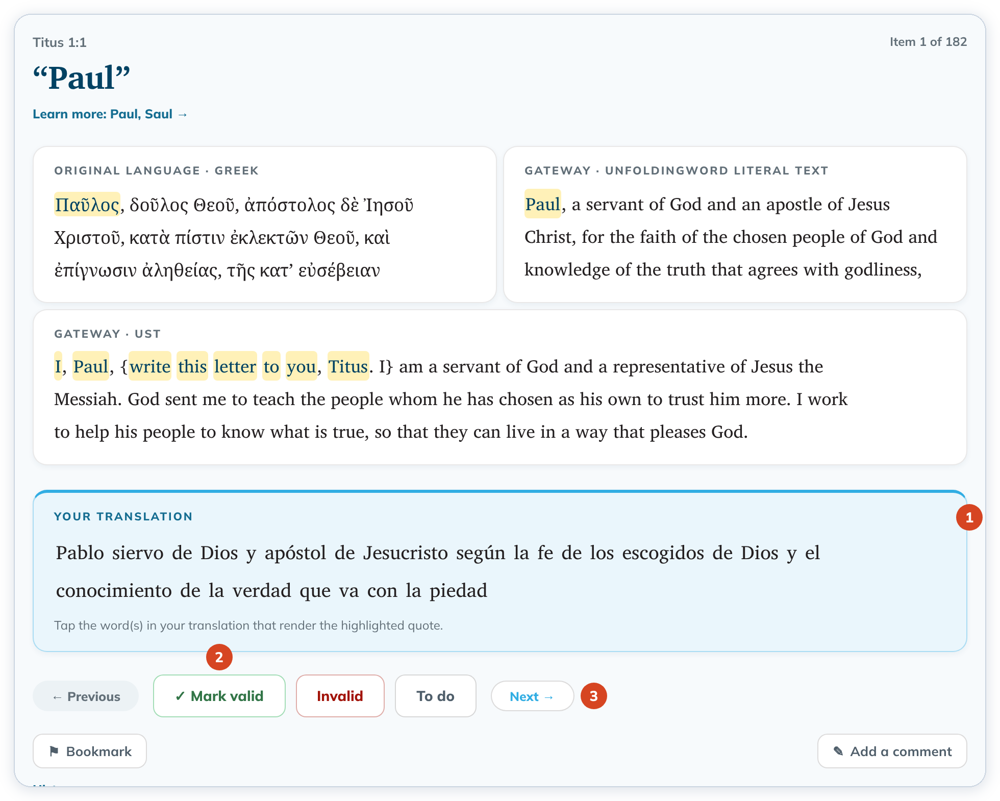
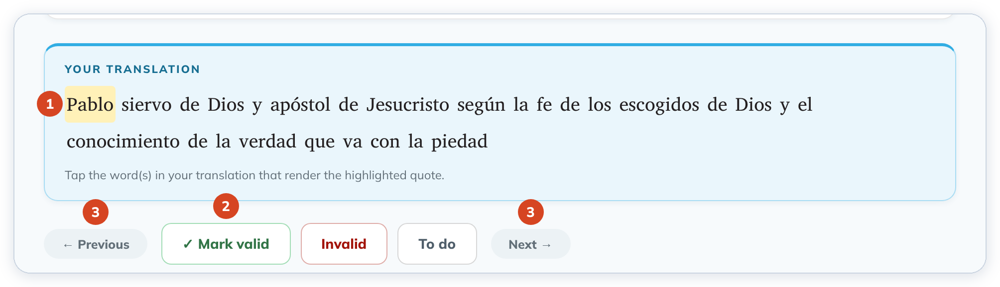
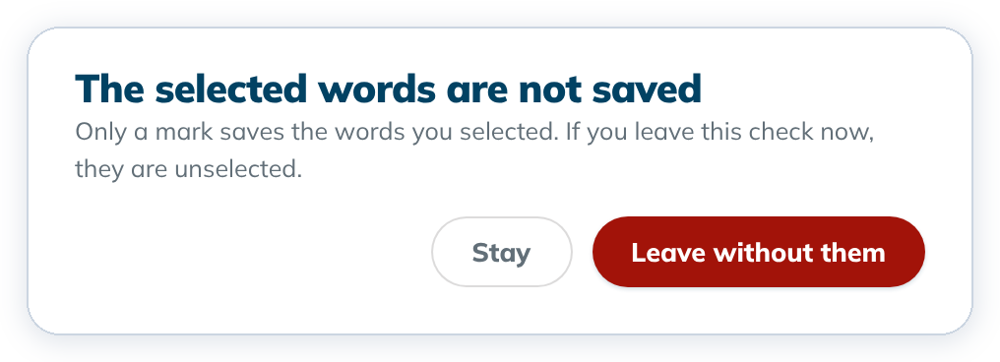

Decide on a check item (valid, invalid, to do)
For each check, select the words in your translation, then mark the item valid or invalid, or leave it to do.
Every item starts as To do until you decide it.
Steps
- Read the highlighted quote in the source cards: the original language, the literal gateway text and, when it is on your computer, the simplified text (UST or GST).
- Under Your translation (1), tap the word or words that translate it. Tap again to unselect. To select several words in a row, drag across them. The drag selects whole words.




- Click ✓ Mark valid if the translation is right, or Invalid if something needs fixing (2). Click To do to take a decision back.
- Click Next beside the marking buttons (3) to go to the next item, or click any item in the list on the left.
Only a mark saves the words you selected. While you have selected words that no mark saved, Previous and Next are greyed out (3). Pointing at them says Mark this check or unselect the words to move on.
If you go to another check in the list, ← All checking tools, another mode or another project with unsaved words, tC4 asks first: The selected words are not saved. Click Stay to keep them, or Leave without them.


Marking an item doesn't move you on, so you can change your mind before you go to the next one.
Good to know
- Each mark is saved right away. Only ✓ Mark valid saves the words you selected, and they are still selected when you come back to the item. Invalid saves no words, and To do keeps the words the check already had.
- If you change the selected words after you marked the item, the mark is taken away and the item counts as not decided again. Mark it again to save the new words.
- While a mark is being saved, the words, the marking buttons, Previous and Next are off for a moment. If the mark could not be saved, you stay on the check with your words and a notice.
- A drag that starts to the left of the first word selects text to copy instead. That shows in the normal blue highlight, not yellow.
- Previous and Next are on the same row as the marking buttons. On a small screen, a long note can push that row below the window. Scroll down to reach it.
- Your translation shows your words without punctuation, and a word with an apostrophe can look split (for example "God's" as "God s"). Your text in Translate isn't changed.
- To fix the text, click ← Back to translating. See Editing a verse you already checked or aligned.
- Use the Invalid filter later to find everything you still need to fix.
- If you see "This check was not saved. The project's resource changed since this book was checked…", update the resource first, then check again. Nothing was lost.